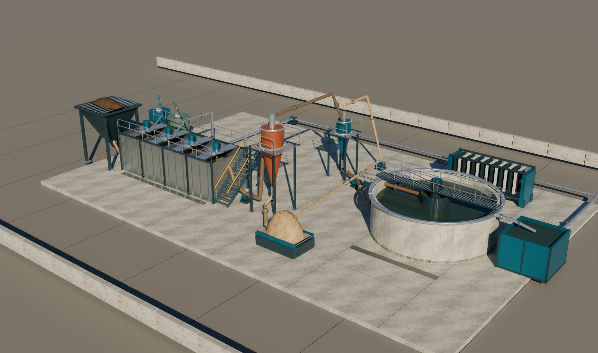

현장 재질 기반 CG 개념 설비 · 실제 현장 사진 아님
슬러리분리물처리수약품방향·움직임은 개념 표현
내부·단면은 구조 설명용 표현입니다.
공정 개요
퇴적물에서 처리수까지
반입·세척, 입도 분리, 고도처리와 후단 처리의 구성을 살펴보세요. 위 공정 버튼이나 장치를 선택하면 설명이 바뀝니다.
설비 배치와 흐름을 설명하는 개념 모델정적 전경

내부·단면은 구조 설명용 표현입니다.
반입·세척, 입도 분리, 고도처리와 후단 처리의 구성을 살펴보세요. 위 공정 버튼이나 장치를 선택하면 설명이 바뀝니다.